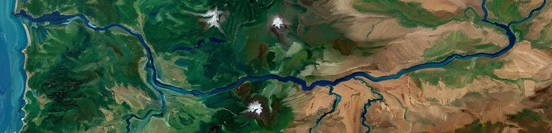

Sea-level pressure difference along the river, west→east. When pressure stacks higher to the west, air accelerates down the Gorge — the summer westerly. Green favors wind; red is offshore/east.
Each chart plots the sea-level pressure difference (inches of mercury) between two points, first − second. Positive means the western point sits higher — the gradient that drives the Gorge westerlies. The overview charts span ~39 hours (−12h to +27h around now, Pacific); the zoom shows −5h→+5h at 15-minute resolution, with an optional temperature-difference overlay (right axis, °F) — the thermal contrast that actually creates the pressure gradient.
Observed dots blend official hourly METAR (KAST, KPDX, KDLS,
KHRI) with sub-hourly readings from the nearest personal weather station, bias-corrected to the
airport. Forecast (dashed) is Open-Meteo model sea-level pressure. Station data via
api.aerisapi.com (PWSWeather), forecast via api.open-meteo.com — fetched
directly in the browser.
